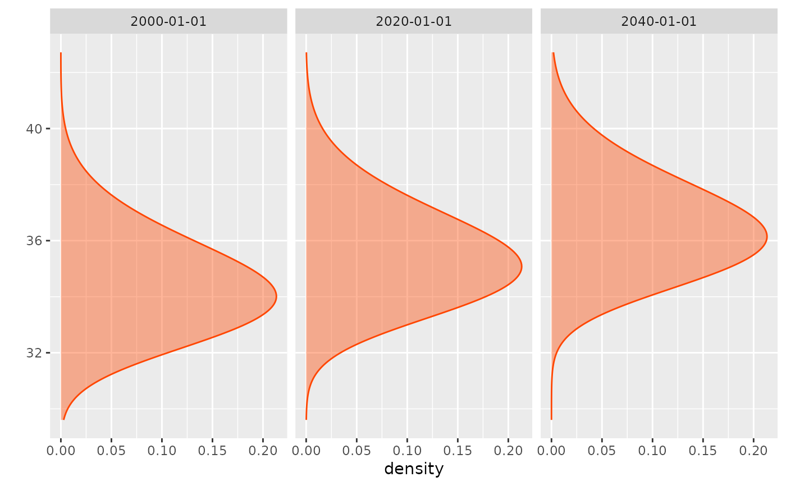
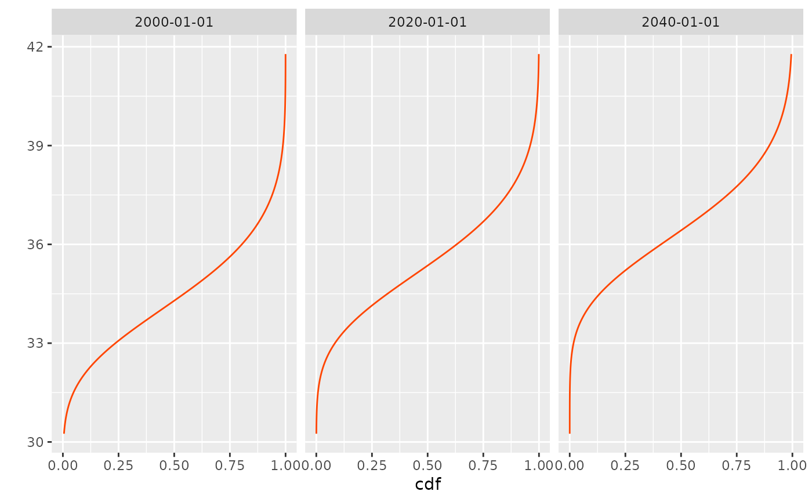

R/statsTVGEV.R
density.TVGEV.RdCompute TVGEV densities or Cumulative Distribution Functions.
A TVGEV object.
Vector of quantiles at which the GEV densities will be evaluated. By default, a grid of value is found with coverage probability > 0.001 for each observation.
An object that can be coerced to the
class"Date" giving the date of the blocks for which the
density will be evaluated. By default, three dates are selected
in the date vector attached to x.
Vector of model coefficients. By default, the vector of
estimated coefficients in x is used.
Logical. If TRUE the log-density is returned.
xValue Vector of probabilities at which the GEV
densities will be evaluated. By default, a grid of value from
0.0 to 1.0 is used. for each observation.
An oject with class "bfts". This is mainly a matrix
with one row by date. Rather than providing a time-plot of each
column (as would be done for a "bts" object), the
plot method plots the density or cdf function for a small
number of dates. Unless the number of dates is 1, the
functions are plotted with the x-y axes flipped in order to enhance
the time-varying feature of the model.
GEV for the density and cdf of the GEV
distribution, plot.predict.TVGEV for the Return Level
plot.
example(TVGEV)
#>
#> TVGEV> ## transform a numeric year into a date
#> TVGEV> df <- within(TXMax_Dijon, Date <- as.Date(sprintf("%4d-01-01", Year)))
#>
#> TVGEV> df0 <- subset(df, !is.na(TXMax))
#>
#> TVGEV> ## fit a TVGEV model. Only the location parameter is TV.
#> TVGEV> t1 <- system.time(
#> TVGEV+ res1 <- TVGEV(data = df, response = "TXMax", date = "Date",
#> TVGEV+ design = breaksX(date = Date, breaks = "1970-01-01", degree = 1),
#> TVGEV+ loc = ~ t1 + t1_1970))
#>
#> TVGEV> ## The same using "nloptr" optimisation.
#> TVGEV> t2 <- system.time(
#> TVGEV+ res2 <- TVGEV(data = df, response = "TXMax", date = "Date",
#> TVGEV+ design = breaksX(date = Date, breaks = "1970-01-01", degree = 1),
#> TVGEV+ loc = ~ t1 + t1_1970,
#> TVGEV+ estim = "nloptr",
#> TVGEV+ parTrack = TRUE))
#>
#> TVGEV> ## use extRemes::fevd the required variables need to be added to the data frame
#> TVGEV> ## passed as 'data' argument
#> TVGEV> t0 <- system.time({
#> TVGEV+ df0.evd <- cbind(df0, breaksX(date = df0$Date, breaks = "1970-01-01",
#> TVGEV+ degree = 1));
#> TVGEV+ res0 <- fevd(x = df0.evd$TXMax, data = df0.evd, loc = ~ t1 + t1_1970)
#> TVGEV+ })
#>
#> TVGEV> ## compare estimate and negative log-liks
#> TVGEV> cbind("fevd" = res0$results$par,
#> TVGEV+ "TVGEV_optim" = res1$estimate,
#> TVGEV+ "TVGEV_nloptr" = res2$estimate)
#> fevd TVGEV_optim TVGEV_nloptr
#> mu0 32.06678895 32.06638460 32.06679282
#> mu1 -0.02391857 -0.02392656 -0.02391856
#> mu2 0.07727041 0.07728411 0.07727061
#> scale 1.75585289 1.75541862 1.75585353
#> shape -0.18130928 -0.18112018 -0.18131041
#>
#> TVGEV> cbind("fevd" = res0$results$value,
#> TVGEV+ "VGEV_optim" = res1$negLogLik,
#> TVGEV+ "TVGEV_nloptr" = res2$negLogLik)
#> fevd VGEV_optim TVGEV_nloptr
#> [1,] 177.2014 177.2014 177.2014
#>
#> TVGEV> ## ====================================================================
#> TVGEV> ## use a loop on plausible break years. The fitted models
#> TVGEV> ## are stored within a list
#> TVGEV> ## ====================================================================
#> TVGEV>
#> TVGEV> ## Not run:
#> TVGEV> ##D
#> TVGEV> ##D yearBreaks <- c(1940, 1950, 1955, 1960:2000, 2005, 2010)
#> TVGEV> ##D res <- list()
#> TVGEV> ##D
#> TVGEV> ##D for (ib in seq_along(yearBreaks)) {
#> TVGEV> ##D d <- sprintf("%4d-01-01", yearBreaks[[ib]])
#> TVGEV> ##D floc <- as.formula(sprintf("~ t1 + t1_%4d", yearBreaks[[ib]]))
#> TVGEV> ##D res[[d]] <- TVGEV(data = df, response = "TXMax", date = "Date",
#> TVGEV> ##D design = breaksX(date = Date, breaks = d, degree = 1),
#> TVGEV> ##D loc = floc)
#> TVGEV> ##D }
#> TVGEV> ##D
#> TVGEV> ##D ## [continuing...] ]find the model with maximum likelihood, and plot
#> TVGEV> ##D ## something like a profile likelihood for the break date considered
#> TVGEV> ##D ## as a new parameter. However, the model is not differentiable w.r.t.
#> TVGEV> ##D ## the break!
#> TVGEV> ##D
#> TVGEV> ##D ll <- sapply(res, logLik)
#> TVGEV> ##D plot(yearBreaks, ll, type = "o", pch = 21, col = "orangered",
#> TVGEV> ##D lwd = 2, bg = "gold", xlab = "break", ylab = "log-lik")
#> TVGEV> ##D grid()
#> TVGEV> ##D iMax <- which.max(ll)
#> TVGEV> ##D abline(v = yearBreaks[iMax])
#> TVGEV> ##D abline(h = ll[iMax] - c(0, qchisq(0.95, df = 1) /2),
#> TVGEV> ##D col = "SpringGreen3", lwd = 2)
#> TVGEV> ##D
#> TVGEV> ## End(Not run)
#> TVGEV>
#> TVGEV>
#> TVGEV>
d <- density(res1, date = c("2000-01-01", "2020-01-01", "2040-01-01"))
F <- cdf(res1, date = c("2000-01-01", "2020-01-01", "2040-01-01"))
plot(d, fill = TRUE)

plot(F)
